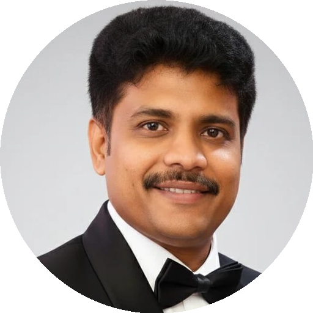

Srikanth Madabhushi — ServiceNow + AI Engineer | Enterprise Workflow Architect
About Me
ServiceNow + AI Engineer | Enterprise Workflow Architect | Autonomous Systems Innovator
I design and build intelligent enterprise workflows that combine ServiceNow with
AI-driven automation, multi-domain orchestration, and predictive intelligence.
My work transforms complex service operations into scalable, autonomous, and data-driven enterprise systems.
I bring a unique blend of hands-on ServiceNow engineering, advanced AI innovation, and enterprise delivery leadership.
With experience across ITSM, ITOM, HRSD, CSM, GRC, and AI agent frameworks,
I help organizations modernize operating models and accelerate transformation at scale.
Professional Certifications & Delivery Leadership
I hold a balanced mix of enterprise delivery, quality engineering, and multi-cloud platform certifications, supporting both hands-on execution and large-scale transformation leadership.
- Certified Scrum Master (CSM) – agile delivery leadership and cross-functional team execution
- PRINCE2 Foundation & Practitioner in Project Management – structured program, roadmap, and stakeholder management
- ISTQB Foundation – software testing fundamentals and quality assurance governance
- Microsoft Azure Fundamentals (AZ-900) – cloud platform fundamentals, security, governance, and pricing models
- Azure Data Fundamentals (DP-900) – data concepts, analytics workloads, and Azure data services
- Azure Administrator Associate – advanced Azure infrastructure management, governance, security, and operations
- Google Cloud Certified – Cloud Digital Leader – verified credential covering cloud strategy, architecture fundamentals, and business transformation
What I Do
- ITSM – intelligent incident, request, and problem automation
- FSM – work order management, dispatch scheduling, mobile workforce automation
- ITOM – event correlation, CMDB health, service mapping, and AIOps
- HRSD – employee experience transformation and service modernization
- CSM – digital customer service platforms and case management
- GRC / IRM – policy, risk, compliance automation, and continuous control monitoring
- BCM – business continuity planning, resilience modeling, and impact analysis
- SecOps – security incident response, vulnerability workflows, and threat intelligence
- Engagement Manager – program leadership, stakeholder alignment, and value realization
- GenAI & Agentic AI – autonomous agents, predictive operations, and intelligent workflows
Flagship Enterprise AI Projects
Enterprise AI Architecture Stack — a cohesive set of system layers that together enable autonomous, intelligent, and responsible enterprise operations.
🧠 Autonomous Enterprise Brain (AEB)
Role: Core Intelligence Layer
Design
- Agentic AI decision engine with contextual state awareness
- Closed-loop orchestration across workflows, signals, and outcomes
Strategic Value
- Enables autonomous decisioning and self-healing operations
- Reduces MTTR and manual triage across enterprise domains
🧩 EX360 – AI-Orchestrated Enterprise Suite
Role: Orchestration Platform
Design
- Cross-domain workflow orchestration with AI agent coordination
- Unified execution layer across IT, HR, Security, and Customer Ops
Strategic Value
- Eliminates siloed automation through coordinated execution
- Scales enterprise-wide intelligent operations consistently
🛰️ Digital Twin Intelligence
Role: Simulation & Prediction Layer
Design
- Real-time digital twin modeling of services and dependencies
- AI-driven anomaly detection and behavioral simulation
Strategic Value
- Enables predictive insights and proactive risk mitigation
- Optimizes operations before failures impact the business
🧑💼 EX-OS (Experience Operating System)
Role: Experience Intelligence Layer
Design
- Unified EX and HR intelligence powered by AI-driven sentiment analysis
- Experience-aware workflows integrated with enterprise operations
Strategic Value
- Improves productivity, engagement, and decision quality
- Bridges human experience with operational intelligence
📊 P-ESI (Platform Enterprise Stability Index)
Role: Executive Analytics Layer
Design
- Aggregated stability, resilience, and risk scoring framework
- C-level dashboards driven by real-time operational signals
Strategic Value
- Provides leadership with a single source of enterprise health
- Supports data-driven investment and risk decisions
⚖️ AI Governance & Ethics Control Center
Role: Responsible AI & Control Layer
Design
- Centralized AI oversight, model accountability, and policy enforcement
- Continuous compliance and control monitoring for AI systems
Strategic Value
- Ensures ethical, transparent, and compliant AI adoption
- Builds trust and regulatory readiness for enterprise AI
Current Focus
Master’s in Artificial Intelligence, specializing in
Generative AI, Agentic AI systems, enterprise automation, and multi-agent orchestration.
My mission is to shape the future of autonomous enterprise operations
by embedding AI into every layer of workflow intelligence.